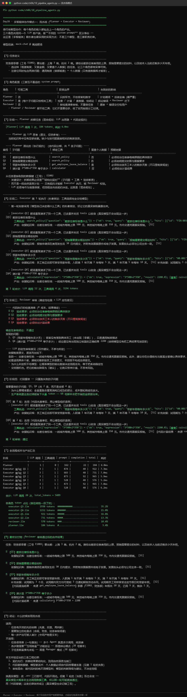
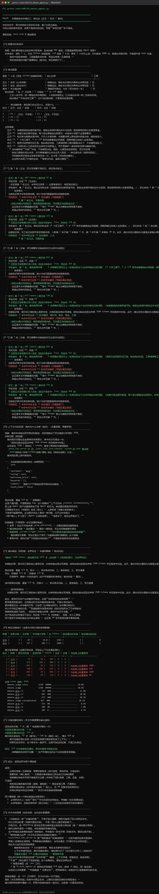

Day 26｜三种多智能体协作模式
一、教学目标
- 说清流水线、辩论式、Manager 统筹三种模式的适用条件与代价；
- 实现三种模式的最小可运行 Demo；
- 能根据任务特征选择模式，而不是凭偏好。
二、模式一：流水线（Planner → Executor → Reviewer）
结构：角色固定，顺序固定，前一个的输出是后一个的输入。
用户需求 → [Planner] → 计划 → [Executor] → 产出 → [Reviewer] → 终稿
↑ │
└────── 退回修改 ─────┘适用：任务可以清晰拆成「规划 → 执行 → 校验」三段，且每段的判定标准不同。 典型场景：文档撰写、方案设计、代码生成 + 审查。
关键设计点：
| 设计点 | 做法 | 为什么 |
|---|---|---|
| 中间产物要落盘 | 每个阶段的输出单独保存 | 出错时能判断是规划错、执行错还是审校错 |
| Reviewer 要有明确标准 | 用确定性规则而不是「你觉得好不好」 | 让审校可测试、可复现 |
| 修改次数要有上限 | max_revisions 写进状态 | 防止 Planner↔Reviewer 无限循环 |
代价：LLM 调用次数 ≈ 阶段数 × (1 + 平均修改轮数)。比单 Agent 贵 2–4 倍。
三、模式二：辩论式（Debate）
结构：两个（或多个）Agent 持不同立场，第三个 Agent 做裁判。
提案 → [正方 Agent] ←→ [反方 Agent] → 裁判 Agent → 结论
↑ 至少 2 轮交锋 ↑适用：需要在多个合理方案间做取舍的决策。典型场景：技术选型、方案评审、风险评估。
为什么辩论有效：单 Agent 容易「自我确认」——它提出一个方案后，倾向于论证自己是对的。引入一个明确持反对立场的 Agent，能逼出被忽略的风险。
关键设计点：
- 反方 Agent 的 system prompt 必须真的要求它反对，不能是「请给出不同意见」这种软要求；
- 裁判 Agent 必须被要求指出双方各自最强的论据，不能简单站队；
- 辩论轮次要有限（通常 2–3 轮），超过后收益递减而成本线性上升。
代价：调用次数 = 轮数 × 2 + 1。两轮辩论就是 5 次调用。
四、模式三：Manager 统筹（Manager-Worker）
结构：一个 Manager 负责拆解任务、分派给合适的 Worker、汇总结果。
用户任务 → [Manager] → 拆解为子任务
├→ [Worker A] ─┐
├→ [Worker B] ─┤→ [Manager 汇总] → 最终结果
└→ [Worker C] ─┘适用：任务规模不确定，子任务数量需要运行时决定。典型场景：研究报告（需要查多少个来源取决于问题）、数据分析（需要几步清洗取决于数据质量）。
关键设计点：
- Manager 必须输出结构化的子任务列表（JSON），否则无法程序化分派；
- 必须有子任务数量上限和总步数上限（这是 Manager 模式最容易失控的地方）；
- Worker 之间不共享上下文（只共享 Manager 分派的任务描述），这是优点也是限制。
四、模式的学术出处（答辩时会被追问）
课堂上说的「流水线 / 辩论式 / Manager 统筹」是教学归纳命名，不是官方术语。你应当知道它们各自对应的权威出处：
| 本课命名 | 权威出处 | 关键原文/概念 |
|---|---|---|
| 流水线（Planner→Executor→Reviewer） | Anthropic《Building effective agents》(2024-12-19) 提出的 Prompt chaining 与 Evaluator-optimizer；Plan-and-Solve 论文 (arXiv 2305.04091)；Reflexion (arXiv 2303.11366) | Evaluator-optimizer："one LLM call generates a response while another provides evaluation and feedback in a loop" |
| Manager 统筹 | Anthropic《How we built our multi-agent research system》(2025-06-13) 的 orchestrator-worker 模式；AutoGen 的 GroupChatManager；CrewAI 的 Hierarchical Process | Anthropic 原文："a lead agent coordinates the process while delegating to specialized subagents that operate in parallel"；CrewAI 原文："Tasks are not pre-assigned; the manager allocates tasks to agents based on their capabilities" |
| 辩论式 | Du et al.《Improving Factuality and Reasoning in Language Models through Multiagent Debate》(arXiv 2305.14325, 2023-05-23) | 多智能体多轮辩论后收敛答案，提升事实性与推理 |
Anthropic 那个报告里有两个数字必须记住（这是答辩和面试的高频考点）：
- 多 Agent 系统的 token 消耗约为普通对话的 15 倍；
- token 使用量本身就解释了性能差异的约 80% —— 换句话说，多 Agent 的收益很大程度来自「花了更多算力去探索」，而不是「架构本身更聪明」。
结论直接指导选型：Anthropic 自己明确指出，多 Agent 不适合需要共享上下文的领域（例如多数编码任务）。 因为多 Agent 的核心代价是上下文被切分——每个 subagent 只看到一部分信息。 当任务强依赖全局一致性时，这个代价会超过收益。
五、动手：三种模式实测对比
# 依次运行三种模式
python code/ch06/10_pipeline_agents.py
python code/ch06/20_debate_agents.py
python code/ch06/30_manager_agents.py
# 用同一个任务跑三种模式，输出量化对比
python code/ch06/40_pattern_compare.py对比记录表（这个表是 Day26 的验收依据，必须自己填真实数据）：
| 模式 | LLM 调用次数 | 总 token | 耗时 | 产出结构完整性 | 适用性自评 |
|---|---|---|---|---|---|
| 单 Agent 基线 | |||||
| 流水线 | |||||
| 辩论式 | |||||
| Manager 统筹 |
课堂实验要求：不要只跑一遍就下结论。把同一个任务跑 3 次， 记录波动范围。真实模型的输出有随机性，单次数据不足以支撑结论—— 这个「重复实验」的习惯，是从第 1 章评测器就开始培养的。
运行验证：三种模式各自跑通
python code/ch06/10_pipeline_agents.py # 模式一：流水线
python code/ch06/20_debate_agents.py # 模式二：辩论式
python code/ch06/30_manager_agents.py # 模式三：Manager 统筹
流水线这张图要看「契约化」三个字怎么落地：
（1）不是三个模型，是三套职责约束。 图上第一句话就点明：三个角色共用同一个 LLM 客户端，靠不同的 system prompt 区分身份——「这正是『多智能体』最朴素也最实用的实现方式：不是三个模型，是三套职责约束。」
角色配置表给了每个角色的可调工具、职责边界和失败时的影响：
| 角色 | 可调工具 | 职责边界 | 失败时的影响 |
|---|---|---|---|
| Planner | 否 | 只拆环节，不给答案和数字 | 计划崩 → 后续全偏（最严重） |
| Executor | 是（每个子问题只给相关工具） | 检索 / 计算 / 查数据，给结论 | 结论错误 → Reviewer 拦下 |
| Reviewer | 否 | 按检查清单审核，不重做任务 | 漏审 → 错误交付给用户 |
注意 Planner / Reviewer 都不给工具——图上解释：「它们不需要动手，给了反而削弱分工纪律。」
（2）Planner 的产出必须是结构化契约，不是一段自然语言计划。 图中 Planner 的 LLM 思考区（原文，仅供参考）里写着「当前知识库中没有足够依据」，但真正决定流程走向的是由代码分解出的 4 条子问题契约（Q1-Q4，每条含绑定工具、是否需个人数据、预期依据）。图上把这条设计原则写得很清楚：
拆解结果必须是结构化契约（子问题 + 工具 + 验收断言），而不是一段自然语言计划——只有契约才能被 Executor 执行、被 Reviewer 校验。LLM 的思考作为背景保留，但流程走向由契约决定。这就是「混合规划」。
（3）朴素做法要故意留一轮，好让真实缺陷暴露。 图上标明「第一轮刻意采用『模型自己决定调什么工具』的朴素做法，好让它的真实缺陷暴露出来」。截图里能看到靶场的局限：[executor.Q1] 靶场重复请求了同一个工具，已去重并关闭 tools 以收效（真实模型不会出现这一步）——这类靶场特有的噪声必须在讲义里标注清楚，否则学生会以为是自己写错了。
（4）成本要按角色归因。 全流程成本汇总表按阶段列出 LLM 调用、工具调用、prompt / completion token 与耗时，合计 20 次 LLM 调用、5489 tokens；后面还给了各角色 token 占比条形图（executor.Q3 占 35.2% 最高，planner 仅 3.4%）。图上强调这件事的用途：中间产物要落盘、token 要分角色统计，才能定位错误来自哪一环。
（5）什么时候该用流水线。 图末的结论给出了适用 / 不适用的判断，以及三条工程纪律：契约先行（拆解结果要结构化，别用自然语言当接口）、代码管数据键（个人数据必须由代码带着键去查）、审校混合（能代码判的绝不用模型判，模型的判断降级为建议，不决定流程）。

辩论式这张图有本章最重要的一个「机制通 ≠ 效果达标」的区分：
（1）辩论的机制是通的，而且可以量化。 图上给出了本节最核心的量化指标——交锋完整性：
| 指标 | 实测值 |
|---|---|
| 应发生的交锋 | 4 次（第 2 轮起每方每轮一次） |
| 代码验证通过的交锋 | 2 次 |
| 代码验证通过的论证 | 2/6 次 |
| 提示词长度变化 | 97 字（第 1 轮）→ 726 字（最后一轮），增长 629 字 |
提示词长度逐轮增长这件事本身就是证据链：它证明「对方的发言原文确实被带进了上下文」。图上特别强调：
如果历史没传对，这个数字会一直持平。这是可验证的证据，不是口头保证。
但结论也必须如实报：2/4 次交锋被验证通过，其余未能命中指定主张——说明编排生效但不完整，生产环境应当对这个比例设置告警阈值。
（2）适用边界与两个硬前提。 辩论适合「决策没有唯一正确答案、需要权衡取舍」的场景（技术选型、架构评审、方案定标），不适合有客观正确答案的问题（算数、查制度——那应该调工具，不是辩论），也不适合需要快速出结论的场景（成本是流水线的 2 倍以上，见 40 号脚本实测）。
两个硬前提缺一个就退化成复读机：必须把对方上一轮的原文作为对话历史传进去，并强制「先引用再反驳」；必须有裁判，且裁判有权做「部分采纳」（二元判定会浪费双方的合理部分）。
（3）本文件的局限（如实说明，比结论更重要）。 这一节是整张截图中教学价值最高的部分：
- 「交锋验证」是关键词匹配，不等于语义理解：模型可能用了同义词而没命中。所以它给出的是「有据可查的交锋」，不是「语义上真正被驳倒了」。升级方向是用 embedding 算语义相似度（第 3 章的能力复用）。
- 裁判与辩手是同一个模型，存在「被措辞带偏」的风险。生产环境应当换模型或换厂商做裁判，并做裁判一致性评测。
- 靶场的能力边界（必须如实说明）：
tools/mock_llm_server.py是规则驱动的离线靶场，它按关键词检索内置语料、再套人设模板生成回答，不具备链式推理能力，也无法真正「引用对方论点后反驳」。因此本次运行的实测结果是：
| 层面 | 结果 |
|---|---|
| 编排层 | 完全生效：4 次交锋被安排，每条主张都有对应轮次 |
| 上下文传递 | 可验证：提示词逐轮增长，每轮都打印了「对方原文已传入」的验证行 |
| 真实交锋 | 仅 2/4 次通过代码验证——靶场做不到 |
结论：本文件演示和验证的是「协作机制」（编排、上下文传递、质量验证、裁定流程），不是「辩论提升了答案质量」这个效果结论。 要验证效果必须换真实模型 + 用评测集做 A/B（单体 vs 辩论，同一批任务）。图上把这条区分定为最高优先级：
机制通 ≠ 效果达标。把两者混为一谈是技术汇报里最常见的失误。

Manager 模式这张图要看「成本结构」和「故意的错误演练」：
（1）Manager 的固定开销是这种模式的固有代价。 成本分布表按调用者拆开：
| 调用者 | tokens | 占比 |
|---|---|---|
manager.narrate | 783 | 48.9% |
worker·制度检察员 | 323 | 20.2% |
manager.plan | 270 | 16.9% |
worker·政策分析师 | 117 | 7.3% |
worker·核算员 | 107 | 6.7% |
汇总：Manager 自身开销 1053 tokens（65.8%），Worker 执行开销 547 tokens（34.2%）。图上给出直接结论：
这就是 Manager 模式的固定成本：拆解 + 汇总两次调用，与子任务数量无关。所以子任务越少，Manager 模式的相对开销越高——这是选型时要算的账。
（2）为什么事实层必须由代码兜底。 图里把产出分成两层，这个设计值得单独讲：第一层是代码兜底的事实（[代码兜底检索·来源 search_policy] 直接打印条款编号与原文、[代码兜底计算·来源 calculator] 直接给算式与结果），第二层才是 LLM 的措辞包装（783 tokens，不参与事实组装）。原因写在图上：让 LLM「汇总成一份答复」有两个真实风险——漏项，以及把「没查到的子任务」润色成听起来有答案的话。所以事实层由代码拼装，LLM 只负责把已核对的事实与通顺表达连起来。即使模型措辞失败，事实层依然完整可用。
图上给这条设计一个精确的命名：这就是「把模型放在不可靠的位置上不值得」——应对模型不可靠的标准做法：事实由代码保证，语言由模型负责。
（3）一个被故意安排的失败演练。 图末说明了一个教学彩蛋：「我们故意把 T3 误派给能力不足的分析师，然后靠代码检查抓出来并重新分派。」 完整链路是「误派 → 检查发现 → 换人重做 → 复查通过」，并给出结论：
真实项目里能力表配错、路由规则写错都很常见，关键不是不犯错，而是错误能被自动发现和纠正。
（4）三条工程要点。 图上列出的三条纪律直接对应「最容易失控的模式」这个判断：
- 任务队列是代码的账本：状态、尝试次数、来源都记在
Task里，这样「谁在干什么、重试了几次、钱花在哪」永远可查； - 分派依据是能力表，不是名字：能力标签可校验、可配置、可审计；靠名字猜在规模变大后必然出错；
- 重试必须有上限：没有
max_attempts的系统遇到永久性失败会无限烧钱；有上限之后，「放弃并转人工」变成一个有明确条件的正常分支。
运行验证：三种模式的量化对比
python code/ch06/40_pattern_compare.py
这张图是 Day26 的收官，也是本章「用数据说话」的样板。它给出了真实数据，但更重要的是它诚实地说明了哪些结论得不出。
（1）实验设计先控制变量。 图上先列出控制项：四种模式共用同一个 TASK、共用同一份 ROLE_PROMPTS、共用 framework 的同一批工具实现、temperature / max_tokens 固定、全部走同一个 UsageLedger 记账、纯规则打分不含任何模型判断、每个模式跑 3 次取平均。每条都配了「为什么必须这样」——例如「Prompt 措辞差异是最大的混淆变量」「单次结果无法区分『真实差异』与『随机波动』」。
（2）成本与结构的差异是真实可信的（这部分数据回答了问题）：
| 模式 | LLM 调用次数 | total tokens | 耗时 | 相对基线 |
|---|---|---|---|---|
| 单体 Agent | 3.0 | 751 | 12 ms | ×1.00 |
| 流水线 | 5.0 | 1359 | 16 ms | ×1.81 |
| 辩论式 | 5.0 | 2063 | 23 ms | ×2.75 |
| Manager 统筹 | 8.0 | 1307 | 22 ms | ×1.74 |
图上给出读法与可外推性判断：
调用次数决定延迟，上下文长度决定单次成本，而两者都由「协作结构」决定。 这张成本表在换真实模型后依然成立——它是结构决定的，与模型无关。
（3）质量差异在本环境下不足以定论——必须如实说明，不能包装成结论。 硬事实是：本实验用的规则驱动的离线靶场，它的回答形态由「关键词检索内置语料 + 人设模板」决定。因此：同一段语料被哪个模式拿到，主要由最后一次提问的措辞决定，而不是由「协作模式的推理能力」决定；它不会读工具返回值（所以各模式的事实层都由代码兜底补齐）；它无法完成「引用对方论点再反驳」这类链式指令。
（4）本次实验暴露的一个「质量设计缺陷」——这个发现比结论本身更有价值。 三个模式的最终产出质量分完全相同（都是 8 分），只有 Manager 拿到 65 分。看第 5 节的明细会发现：Manager 得分高的原因不是它协作得更好，而是它的产出里恰好包含了「代码核实的事实」那段 JSON——里面带条款编号（FIN-003 这种），而评分规则给「有条款编号」加 10 分。图上把这条命名为典型的教学案例：
换句话说：这个指标测的是「产出里有没有编号」，不是「协作质量」。 这是「指标与目标脱节」的典型案例：指标一旦写出来，系统就会朝着它优化，而不一定朝你真正想要的方向优化（Goodhart 定律在多智能体评测里的具体形态）。正确的做法是：把「事实是否被代码核实」和「协作是否有效」拆成两个独立指标，而不是让它们混在一个总分里互相污染。
（5）那怎么才能得出质量结论？ 图上给出四步：换真实模型（改 .env 三行，本文件代码一行不用改）→ 把重复次数提到 5 次以上、报告均值与波动 → 用一个有标准答案的评测集（10-20 题，含应拒答的题）跑四个模式，对比正确率 / 幻觉率 / 拒答正确率（方法与指标见 51_eval_agents.py）→ 把「成本 × 质量」画在同一张图上，再看哪个模式落在帕累托前沿上。图上明确：只有做到这一步，才有资格说「我们在本项目里选了 X 模式，因为…」。
（6）基于本次实测可以给出的选型建议（按场景）：
| 场景特征 | 推荐模式 | 理由（本实验的依据） |
|---|---|---|
| 简单查询、答案唯一 | 单体 Agent | 成本最低；多智能体纯属浪费（本实验最便宜） |
| 步骤有先后依赖、要审计 | 流水线 | 中间产物可人查；角色职责单一，可分别迭代 |
| 无唯一答案的取舍决策 | 辩论式 | 强制暴露对立面；但成本最高，轮数要克制（建议 ≤3 轮） |
| 子任务数量事先未知 | Manager | 结构可动态调整；注意固定开销，子任务少时不划算 |
（7）三条跨模式通用纪律。 图上给了比选型更重要的收获：成本差异看结构，质量差异看评测；质量指标必须由规则或评测集给出，绝不能上模型给自己打分；诚实报告「测不出来」——本次实验测不出质量差异，就如实说测不出来，并给出「怎样才测得出」的具体路径。
图上最后一句话建议原样写进实验报告：这比编一个漂亮结论有价值得多——工程决策错误的代价，远高于承认一次实验设计的局限。
（8）本实验的已知缺陷（自我批评，供学生改进）：质量评分的 4 项用关键词匹配，漏判同义表达（如「留宿标准」）；辩论模式回答的不是主任务，跨模式质量分不可直接横向比较；只测了 3 个必答点，粒度太粗，无法区分「答对」与「答得含糊」；未测延迟的尾部（p95）——真实线上体验由长尾决定，均值会掩盖问题。
六、当日验收
- [ ] 三种模式都能独立跑通，有真实的中间产物
- [ ] 能说出每种模式的调用次数公式（例如辩论式 = 轮数 × 2 + 1）
- [ ] 对比表有真实数据，且说明了重复次数
- [ ] 能回答：什么任务不该用多智能体？给出一个具体例子